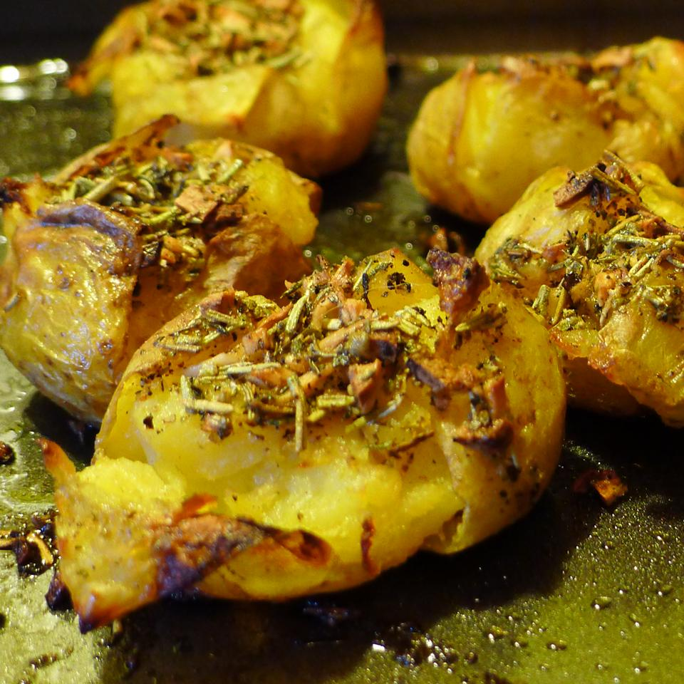

Smashed Potatoes

Description
These are little potato morsels, twice-cooked and infused with flavor!
Ingredients
- 1 ½ pounds small yellow-fleshed potatoes
- ¼ cup olive oil
- 1 teaspoon butter at room temperature
- 2 tablespoons balsamic vinegar
- 3 cloves garlic, minced
- 1 teaspoon dried rosemary
- ½ teaspoon dried sage
- ½ teaspoon ground thyme
- ½ teaspoon dried savory
- ½ teaspoon sea salt
- ½ teaspoon ground black pepper
Steps
- Place potatoes in a saucepan, fill with water to cover the potatoes, and bring to a boil. Reduce heat to a simmer, and cook the potatoes until tender but not mushy, about 20 minutes. Drain and allow potatoes to cool.
- While potatoes are cooking, combine olive oil, butter, balsamic vinegar, garlic, rosemary, sage, thyme, savory, sea salt and pepper in a bowl. Stir with a fork to combine well.
- Preheat an oven to 450 degrees F (230 degrees C). Line a baking sheet with parchment paper.
- Place the potatoes in a single layer on the prepared baking sheet, and lightly press down on the potatoes to partially crush them. Spoon the oil-herb mixture over each potato.
- Bake in the preheated oven until the edges of the potatoes are beginning to crisp, about 25 minutes. Cool for about 5 minutes before serving.